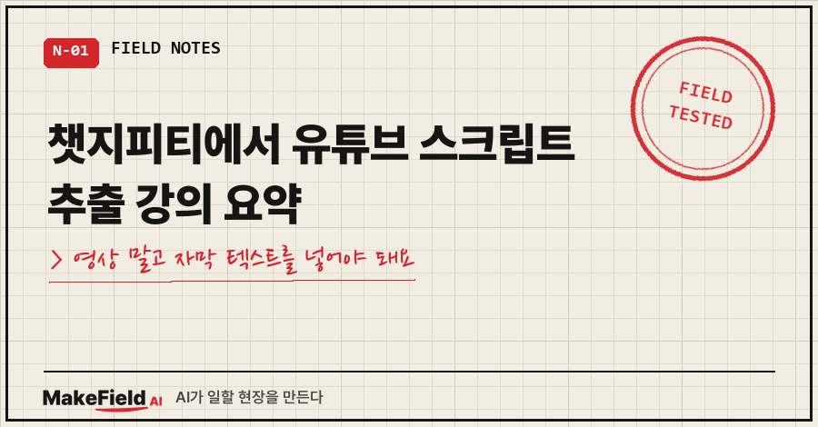
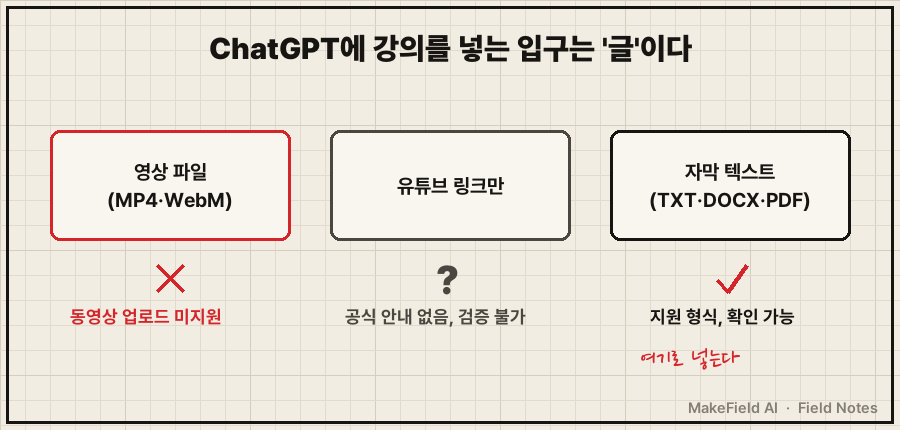
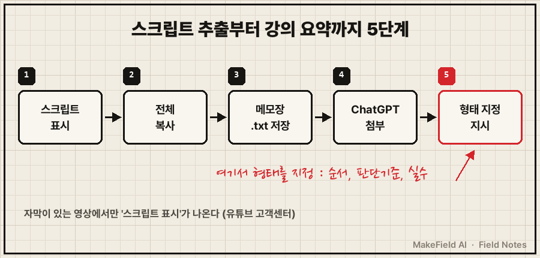
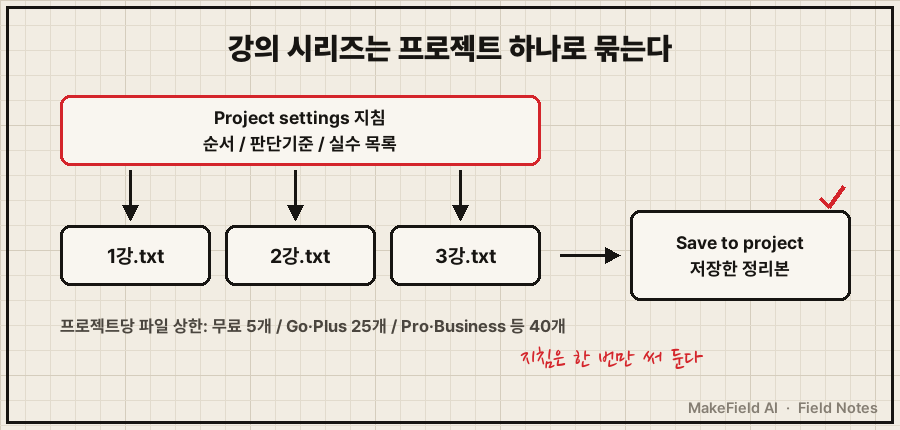

챗지피티에서 유튜브 스크립트 추출 강의 요약은 유튜브에서 '스크립트 표시'로 자막을 꺼내 TXT 파일로 ChatGPT에 넣고, "요약"이 아니라 "순서와 판단 기준"을 달라고 시키면 됩니다.
OpenAI 도움말 기준(2026년 10월 13일 확인) ChatGPT 업로드 형식에 동영상은 없고, 유튜브 링크를 읽는다는 안내도 없어요. 그래서 확인 가능한 길은 자막을 글로 바꿔 넣는 것 하나예요.
현장 설비 자동화를 15년째 해 온 엔지니어예요. 영상을 AI 지식으로 옮기는 이유는 예전 글에 썼으니, 오늘은 ChatGPT 화면에서 어디에 뭘 넣느냐만 다룰게요.
1. 링크만 붙였더니 이런 답이 와요
이 검색어로 들어오시는 분들은 대개 이 장면에서 멈춰요.
- 유튜브 주소만 붙이고 "이 강의 요약해 줘" → 답은 오는데, 강의 본문을 읽고 쓴 건지 확인할 길이 없다
- 영상 파일을 끌어다 놓았더니 올라가지 않는다
- 스크립트를 붙였더니 매끈한 3줄 요약만 나와서 막상 쓸 데가 없다
저도 세 번째에서 걸렸어요. 이건 3절 지시문에서 풉니다.
2. 원인: ChatGPT는 영상이 아니라 '글'을 읽어요
ChatGPT에 강의를 먹이는 확실한 입구는 텍스트예요. 동영상으로 식별된 MP4·WebM은 오디오 업로드로도 안 받고, 링크 처리 설명도 없으니 링크만 주면 근거를 검증할 수 없어요.
참고로 저는 이 작업을 ChatGPT가 아니라 제미나이로 처음 했어요. 아래 ChatGPT 쪽 조건은 제가 겪은 게 아니라 OpenAI 도움말 원문으로 확인한 내용입니다.

| 넣는 방법 | 공식 근거 | 강의 요약에 쓸 만한가 |
|---|---|---|
| 영상 파일 업로드 | 동영상으로 식별된 MP4·WebM 미지원 | 안 됨 |
| 유튜브 링크만 붙이기 | OpenAI 도움말에 안내 없음 | 근거 확인 불가 |
| 스크립트를 대화창에 붙여넣기 | 텍스트 입력 | 짧은 강의는 가장 빠름 |
| 스크립트를 TXT 파일로 첨부 | TXT 지원, 파일당 200만 토큰 | 긴 강의에 안정적 |
3. 해결: 스크립트 추출부터 강의 요약까지 5단계
유튜브 쪽 버튼 위치는 형제 글에 그림으로 정리해 뒀어요. 여기선 ChatGPT까지 한 줄로 이어 볼게요.
- 유튜브 영상 아래 설명란을 펼치고 '스크립트 표시'를 누른다. 자막이 있는 영상에서만 나와요(→ https://support.google.com/youtube/answer/15930243?hl=ko).
- 스크립트를 처음부터 끝까지 긁어 복사한다.
- 메모장에 붙여
강의제목_스크립트.txt로 저장한다. - ChatGPT 대화창에 그 TXT 파일을 첨부한다. 무료 계정은 파일 업로드가 하루 3개까지예요(→ https://help.openai.com/en/articles/8555545-file-uploads-faq).
- 아래처럼 결과의 형태를 콕 집어 지시한다.
첨부한 파일은 유튜브 강의 스크립트야.
3줄 요약 말고, 내가 나중에 그대로 따라 할 수 있게 정리해줘.
1) 강의가 다루는 작업 순서 (번호)
2) 각 단계에서 강사가 말한 판단 기준 ("이럴 땐 이렇게")
3) 강사가 경고한 실수 목록
스크립트에 없는 내용은 지어내지 말고 "스크립트에 없음"이라고 적어줘.
강의가 여러 편짜리 시리즈라면 프로젝트를 쓰세요. 사이드바 New project로 만들고, ••• 메뉴 → Project settings에 위 지시문을 넣어 두면 그 프로젝트 안 대화에 매번 적용돼요. 프로젝트 지침은 전역 맞춤 지침보다 우선합니다(→ https://help.openai.com/en/articles/10169521-projects-in-chatgpt). 정리된 답은 메시지 메뉴의 Save to project로 소스에 저장돼요. 프로젝트당 파일은 무료 5개, Go·Plus 25개까지예요.

4. 제대로 추출·요약됐는지 확인하는 법
결과를 받으면 세 가지만 보세요.
- 번호 붙은 단계가 있는가. 없으면 그냥 요약이에요
- "스크립트에 없음" 표시가 있는가. 하나도 없는데 내용이 매끈하면 원문에 없는 말이 섞였는지 의심해 보세요
- 자막 오타로 엉뚱해진 용어가 없는가. 자동 자막이 틀리면 AI도 헷갈려서, 저는 뽑은 텍스트를 한 번 훑고 넣어요
제가 걸린 지점도 여기였어요. 처음엔 지시를 대충 줬더니 매끈한 요약만 나왔고, "순서와 판단 기준을 살려라"를 명시하고 나서야 쓸 만한 지시서가 나왔어요. 말 없이 화면만 보여 주는 시연 영상은 자막만으론 반쪽이고요.
5. 같은 증상, 다른 경우
- 정리한 강의를 내 AI 지식으로 심는 이유와 흐름 → 유튜브 강의 AI로 정리하는 법
- '스크립트 표시' 버튼이 안 보이거나 NotebookLM·제미나이로 하고 싶을 때 → 유튜브 ai정리하는법
Q. 스크립트를 대화창에 그냥 붙여도 되나요?
짧은 강의는 그게 제일 빨라요. 긴 강의는 TXT로 넣어 두면 같은 파일로 다시 물을 수 있어요. 무료 계정도 텍스트 업로드가 되고, 하루 3개까지예요.
Q. 영상에서 바로 음성을 뽑아 ChatGPT에 넣으면 안 되나요?
ChatGPT는 유료 플랜에서 MP3·M4A 같은 오디오 파일 전사를 지원하지만, 동영상으로 식별된 MP4·WebM은 받지 않아요. 직접 녹음한 강의 파일이라면 이 길도 있습니다. 유튜브 영상을 내려받는 방법은 이 글에서 다루지 않아요.
정리하면 스크립트 표시 → TXT → ChatGPT 첨부 → 형태를 지정한 지시, 이 순서예요. 지금 다시 보려고 열어 둔 강의 탭이 있다면 그게 첫 번째 재료예요.
이렇게 정리한 지식으로 실제 일을 돌리는 기록은 makefield.ai에서 이어 갑니다.
출처
- OpenAI 도움말, Uploading files and audio to ChatGPT (지원 형식·동영상 미지원·200만 토큰·업로드 횟수·프로젝트 파일 수) → https://help.openai.com/en/articles/8555545-file-uploads-faq
- OpenAI 도움말, Projects in ChatGPT (New project·Project settings 지침·Save to project) → https://help.openai.com/en/articles/10169521-projects-in-chatgpt
- 유튜브 고객센터, 동영상 스크립트 보기 → https://support.google.com/youtube/answer/15930243?hl=ko
- 2026년 10월 13일 원문 확인
태그: #챗지피티유튜브요약 #ChatGPT유튜브요약 #유튜브스크립트추출 #유튜브스크립트표시 #유튜브강의요약 #강의요약AI #챗지피티강의요약 #ChatGPT프로젝트 #챗지피티파일업로드 #유튜브자막추출 #AI공부법 #AI활용법 #생성형AI #AI지식관리 #MakeFieldAI